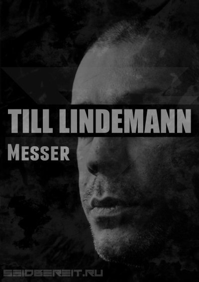
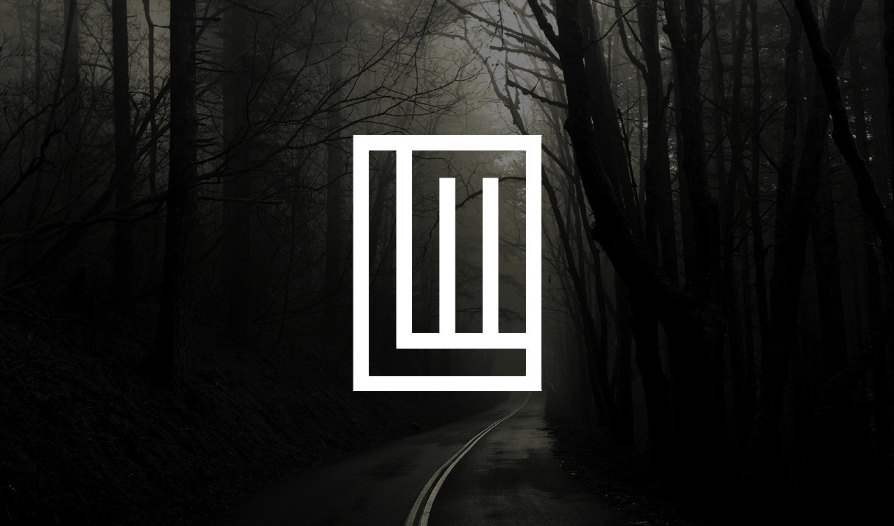
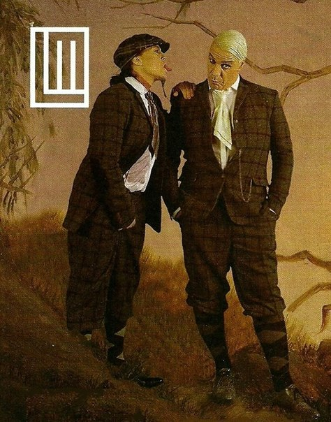
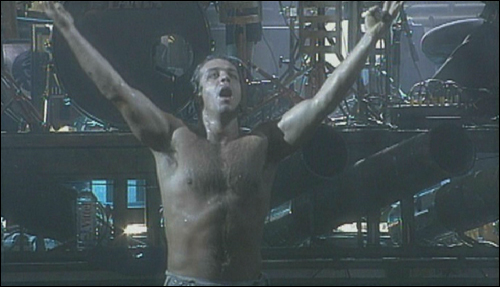

Давным-давно, в семье одного социалистического писателя из небольшой восточно-германской деревушки, появился Тилль! И пошло-поехало...
Поэзия

Многим людям Тилль Линдеманн известен как эксцентричный артист-провокатор, мастер мощного шоу и олицетворением зверской силы. Но за сценической маской скрывается человеческое Я артиста. Оно не всегда доступно обычному взору, но, её величество поэзия, постигла в том числе и Тилля
Первые стихотоврения Тилль писал начиная с юношеского возраста. Постепенно он начал открывать для себя нечто похожее на выражение чувств через строки, лирических героев и метафорические сюжеты. Тилль - человек, и Тилль - герой в поэзии есть одновременно одно и то же, и различное.
Именно поэзия привносит такой неизгладимы вклад в коллектив Rammstein, делая его таким, какой он есть. Здесь и тексты песен. и сценические образы, и стилистика мотивов.
Тилль издал 2 сборника своих произведений: Messer (2003), In stillen Nächten (2013).
Messer
{kind=link}
Человек относительно редко стоит перед вопросом, что пить за завтраком - бензин или свежий апельсиновый сок. Но стоит подумать об этой альтернативе, и человек отходит на шаг от нормы. Я думаю, что если бы вы, будучи официантом, задали тот же вопрос Раскольникову, решение пришло бы быстрее. Линдеманн решил это для себя. Однажды, осенью 1995-го, я впервые встретил Тилля. Разговор был необычным, даже осторожным. В Линдеманне было что-то особенное, общаясь с ним, можно было молчать. Не было никакого напряжения, это было рассуждение о тоске, которую люди таят глубоко в себе. Так все началось. Несколько месяцев спустя Тилль показал мне свои первые стихи - доказательство его доверия. Читая стихи, я быстро отметил, что они не похожи на стихи, написанные Г. Бенном или В. Маяковским, это было что-то другое. Это были стихи Тилля Линдеманна.
В начале этого года у нас появилась идея создать книгу, состоящую из стихотворений. Они были написаны в период с 1995 по 2002 гг.. Я выбрал наиболее выразительные из более чем тысячи стихов. Они появляются здесь впервые, это их мировая премьера. Я с удовольствием опубликовал их, остальные последуют позже. Фотографии - это замкнутый мир искусства, своеобразная театральная постановка. Они основаны на самих стихах, опубликованы впервые и существуют только для этого тома. Встреча одной искусственной фигуры с другими в отдельном, особенном мире. Путешествие в странный, другой мир. Фотографии - это не иллюстрации к стихам. Вместе со стихами, они дают возможность рассматривать их по-новому. Стихи - это пропасть между реальностью.Они рассказывают о ситуациях, которые наполовину ниже или выше комнатной температуры. Стихи Линдеманна - казнь, поэтическое самоубийство, они походят на падающий шар из слов. Это раны отчаяния и надежды. Мысли о бегстве, полные одиночества, идущие из сердца, полного мужества и тоски, заключенных прямо в нем. Рапира против заурядности и лжи. Лирический приговор, приведенный в исполнение.
Лирика Линдеманна не может и не должна быть решением проблемы. Она как факел, который может освещать ночью, но не больше. Стихи - враг этого факела. Моральное превосходство настаивает на том, что в них вообще нет надежды. Возможно, они могут посредничать с болью - единственный спутник, который остается верен вам на протяжении всей жизни.
Стихи описывают структуру страха, температуру сгорания мечты и разрушения человеческих отношений - смеси из страсти. Диагнозы спокойствия, рассказывающие о тех тайниках, в которые люди заключают прошлое. Военные корабли с пробоинами, которые против уничтоженного, разломанного неба в нас самих. Во времена, когда современная немецкая лирика опустилась до уровня псевдоинтеллектуального ненастоящего медведя в зоопарке, поэзия Тилля производит впечатление огненной бури, которая мчится с севера к оазису в ночи. Прыжок выше головы, полный компромиссов и силы, заставляющей сердце биться. Это туннели из воплей загоревшегося времени. Современное изгнание Дьявола, ведущее нас к венам собственной души. Эхо, отдающееся от стен нашей боли. Это - защищающаяся поэзия без оглядки. Линдеманн рассказывает о ранах во время предательства. Слова оживлены, как в кровавом котле. Когда голосовые связки рвали и резали топорами и ножницами в сердечных ранах. Как можно было писать по-другому, когда у людей были следы от сетей на теле.
И мы, и немецкая лирика были бы беднее без этих стихотворений. Их сила как будто дует из открытого окна и тушит в нас огонь. Стихи Линдеманна своеобразны, они лишены тщеславия, оппортунизма и трусости. Тилль - это честный, преданный человек, верный друг. Я благодарю тебя за доверие и дружбу.
Ознакомиться с содержанием сборника Messer можно на ресурсе http://ru.rammstein.wikia.com/wiki/Messer
In stillen Nächten

«In stillen Nächten» (в переводе на русский это будет «В тихой ночи. Лирика») - уже вторая книга стихов фронтмена Rammstain Тилля Линдеманна. Однако русскоязычные читатели откроют эту сторону творчества музыканта впервые - ранее в нашей стране сборники не издавались. Лирические стихи автора зачастую скандальных текстов Rammstain как в русском переводе, так и в оригинале. Хотя группу нередко обвиняли в аморальности слов композиций (кого-то, например, может задеть «Hallelujah»), у них есть и лиричная «Stirb Nicht Vor Mir» (Don't Die Before I Do), созданная вместе с Sharleen Spiteri. Иллюстрации в книге принадлежат другу музыканта художнику Маттиасу Маттису. Кроме того, известно, что «In stillen Nächten» с пометкой «18+» - от использования грубых выражений Линдеманн не стал отказываться.
Ознакомиться с содержанием сборника In stillen Nächten можно на ресурсе http://ru.rammstein.wikia.com/wiki/In_stillen_N%C3%A4chten
Проект Lindemann
 {kind=link}
{kind=link}
Lindemann — метал-проект, образованный 4 января 2015 года Тиллем Линдеманном и Петером Тэгтгреном. Назван в честь фамилии одного из участников. Объявленный музыкальный стиль группы относится к жанру индастриал-метала.
Первая встреча Линдеманна и Тэгтгрена произошла в 2000 году в Швеции. Линдеманн был вместе с клавишником Rammstein — Кристианом Лоренцом. Петер предотвратил драку между членами группы Rammstein и байкерами. С того времени Тилль и Петер хотели начать совместный проект, но они не могли найти подходящее для этого время.
Когда коллектив Rammstein в 2013 году ушёл на перерыв, Тилль и Петер воспользовались этим. 4 января 2015 года, в 52 день рождения Тилля Линдеманна, в Facebook был анонсирован проект Lindemann. Это сопровождалось общим изображением, на котором Тилль и Петер были представлены как новобрачные.
Дебютный альбом Skills in Pills записывался один год и в студии звукозаписи Петера. Первой песней, написанной для альбома, стала «Ladyboy». В работе над песней «That’s My Heart» принял участие Clemens Wijers, музыкант нидерландской симфоник-блэк-метал-группы Carach Angren.
28 мая вышли сингл и клип «Praise Abort». Песня дебютировала в немецком iTunes на 56 месте. Альбом Skills in Pills вышел 23 июня 2015 года и занял первое место в немецком чарте. Тэгтгрен и Линдеманн считают возможным проведение концертов в поддержку альбома. На данный момент участники дуэта записывают новые альбомы своих основных групп.
Информация взята с сайта Википедия: wikipedia.org/wiki/Lindemann
Пиротехника
Квалифицированный пиротехник. Ничего странного, учитывая взрывные шоу Rammstein. После несчастного случая на концерте в Берлине в 96-ом году, когда опоры горящей сцены не выдержали и рухнули прямо на публику, группа наняла новую команду пиротехников и Тилль Линдеманн захотел лично учиться этому нелегкому мастерству в теории и на практике.
Кино
{kind=link}
Тилль успел засветиться на пленке:
- 1999 — «Пола Икс» (Pola X, в роли музыканта)
- 1999 — Rammstein Live aus Berlin DVD (видео)
- 2002 — «Три икса» — камео
- 2003 — Rammstein Lichtspielhaus DVD (видео)
- 2003 — Amundsen der Pinguin — Виктор
- 2004 — Vinzent (в роли борца за права животных)
- 2006 — Anakonda im Netz (ТВ) — камео
- 2006 — Rammstein Volkerball DVD (видео)
- 2012 — Rammstein Videos 1995—2012 DVD (видео)
- 2015 — Rammstein in Amerika (видео)
- 2017 — Rammstein: Paris